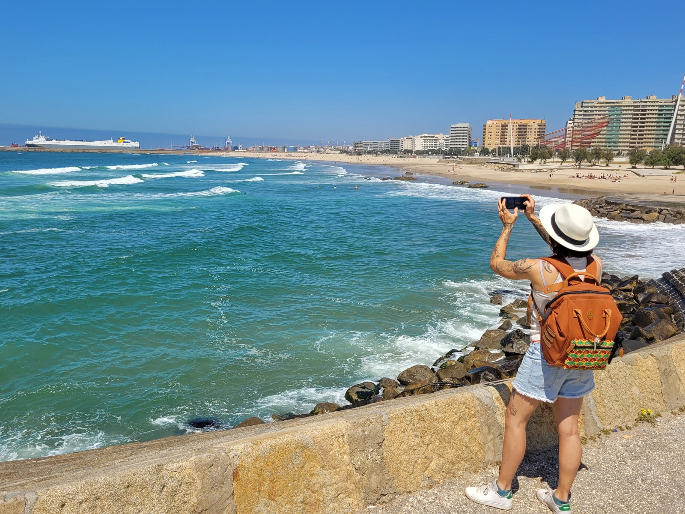
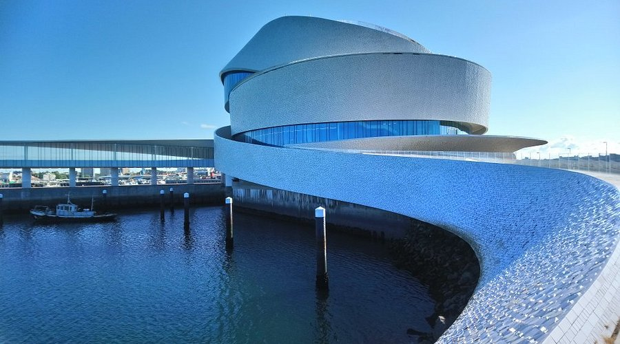
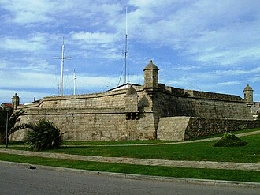
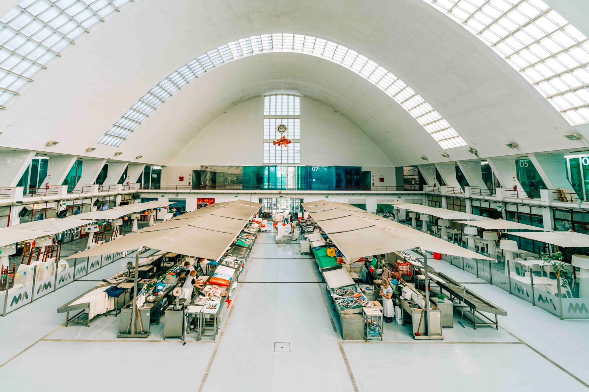
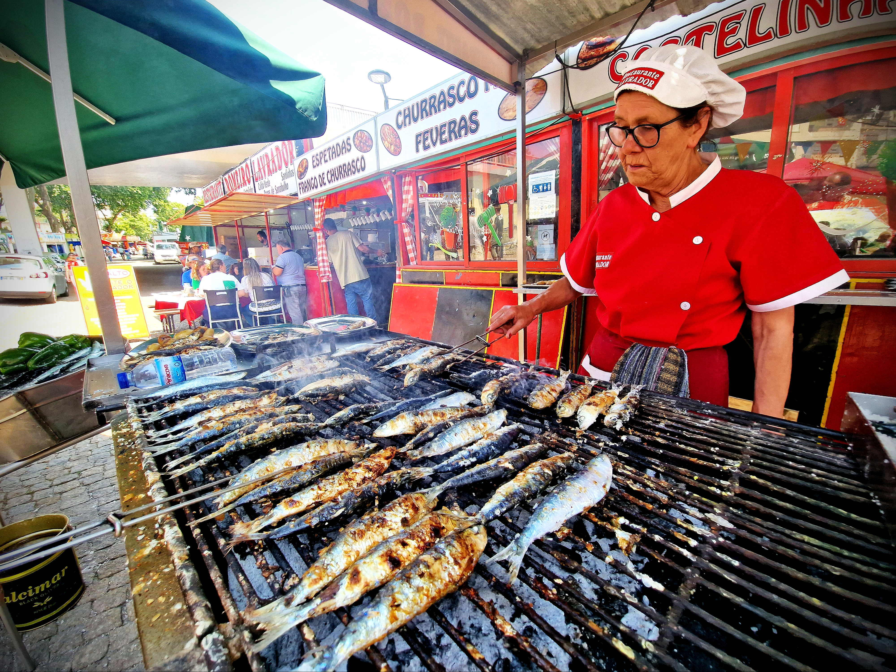
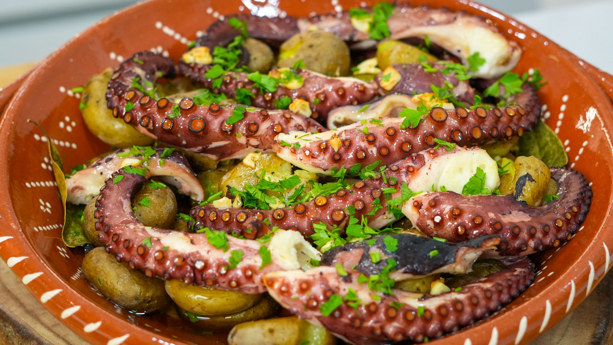
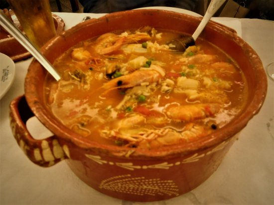

Características Geográficas
Matosinhos situa-se na faixa costeira a norte do Porto, fazendo parte da Área Metropolitana do Porto. O terreno é maioritariamente plano, especialmente na zona costeira, o que contrasta com o interior acidentado de outros concelhos da região, e o clima é mediterrânico com forte influência marítima, assim como no Porto.
População
~172 557 hab.
Área
62,42 km²
Densidade Populacional
~2.764 hab./km²
Atividades Económicas
Matosinhos é um conselho com forte tradição piscatória e portuária, sendo o Porto de Leixões um dos mais importantes de Portugal, servindo como terminal de contentores e carga geral. A indústria têxtil, metalomecânica e alimentar complementam o tecido económico local, enquanto o turismo de praia e a restauração são setores em crescimento impulsionados pelas praias urbanas e pela proximidade ao Porto.
Pontos de Interesse




- Praia de Matosinhos — Praia urbana com areia extensa junto ao núcleo urbano
- Porto de Leixões — Principal porto comercial da região Norte, com importância nacional
- Castelo de Matosinhos — Forte quinhentista junto ao mar, construído no século XVI
- Mercado de Matosinhos — Mercado tradicional de frescos que reflete a tradição piscatória local
Gastronomia Típica

Sardinhas Assadas
Prato símbolo da costa matsosinhense, especialmente no verão

Polvo à Lagareiro
Prato de marisco muito popular nas casas de pasto da praia

Arroz de Marisco
Prato rico em berbigão, amêijoas e camarão do porto de Leixões
Caldeirada
Prato de peixe e marisco cozinhado em tomate